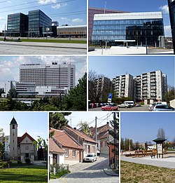

Brno-Starý Lískovec
Brno-Starý Lískovec je městská část na jihozápadním okraji statutárního města Brna.
Je tvořena městskou čtvrtí Starý Lískovec (německy Alt Leskau),
původně samostatnou obcí zvanou Lískovec (německy Leskau), která byla k Brnu připojena v roce 1919.
Celková katastrální výměra činí 3,28 km² a žije zde přes 12 000 obyvatel.

Video průvodce - youtube
Zpět
Ostatní stránky:
- Brno - Královo Pole
- Brno - Bosonohy
- Brno - Žebětín
- Brno - Útěchov
- Brno - Chrlice
- Brno - Ivanovice
- Brno -Jundrov